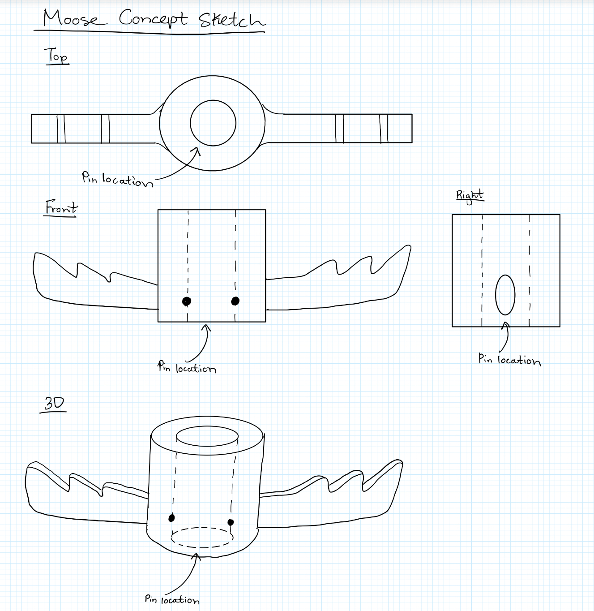

Education
Hi, I'm Matthew! I'm a first-year Systems Design Engineering student at the University of Waterloo! I'm currently in my 1A study term and looking forward to my 1st co-op term this coming January!
Experience
Some of the places, people and groups I've worked with recently:
President - Student Administrative Council
- Managed a team of 15 executives in organizing monthly school-wide initiatives including Orientation, Haunted House,
Semi-Formal and Summer Carnival for +1300 students.
- Oversaw the implementation of a more efficient processing system for Holiday Candy Grams fundraiser, facilitating an increase in sales of
224% (from $314 to $704) compared to the previous year.
- Coordinated a school-wide merch campaign, selling 120+ items to students and faculty within one month.
Communications Executive - Agincourt Investment Club
- Planned and directed the IC’s overall communications strategy, helping to grow the club from 6 founding members in
June '22, to 60+ members by June '23.
- Conducted a Canada Day fundraising campaign, soliciting donations from community members, garnering over $500
over a 10-hour span to fund club events and initiatives.
Captain - Senior Boys’ Volleyball and Soccer Teams
- Mentored less experienced players both on and off the court and field in games and in practices, through drills, set plays
and exercises, leading the soccer team to the 2024 TDSB City Championships.
- Selected as both Senior Boys’ Volleyball MVP and Senior Boys’ Soccer MVP for outstanding contribution, leadership and
sportsmanship.
Projects
Some of the projects I've worked on recently:
3D Printed Totem Pole Puzzle
Currently collaborating with peers to design and print a 5-part 3D modeled totem pole which self-collapses with the removal of a
pin mechanism. Actively working towards enhancing my proficiency in parametric modeling and design optimization using SOLIDWORKS.

Soccer Game Simulator
Developed an application to track offensive and defensive statistics of players and the team, simulating the real events of
a soccer game between two teams. Applied learning of C++ language fundamentals from UW’s Digital Computation course
Check it out on my GitHub!
-
-